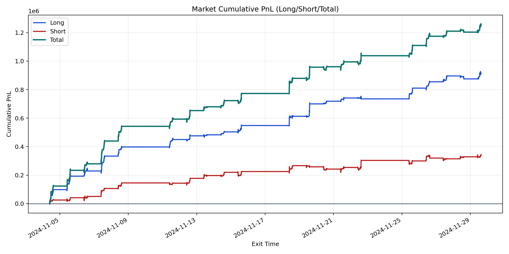
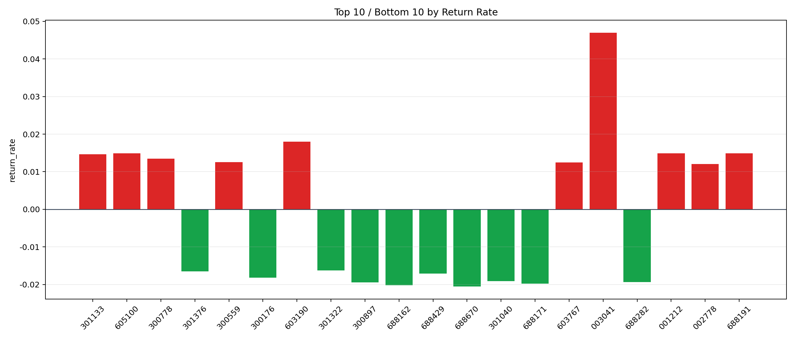

| repo_root | /home/haoranyou/data/output/alpha0.4_1w_5s_3ticks |
|---|---|
| period_months | 1 |
| period_label | 2024-11-04_to_2024-11-29 |
| start_time | 2024-11-04 09:50:12 |
| end_time | 2024-11-29 15:00:00 |
| n_trades | 128561 |
| n_symbols | 2342 |
| total_pnl | 1256088.9317500002 |
| long_total_pnl | 916467.4390000002 |
| short_total_pnl | 339621.4927500001 |
| total_entry_notional | 1186545204.0 |
| long_entry_notional | 638920019.0 |
| short_entry_notional | 547625185.0 |
| total_return_rate | 0.0010586102640805922 |
| long_return_rate | 0.0014344008823426774 |
| short_return_rate | 0.0006201714275613531 |
| top_symbols_by_return | ["003041", "603190", "688191", "001212", "605100", "301133", "300778", "300559", "603767", "002778"] |
| bottom_symbols_by_return | ["688670", "688162", "688171", "300897", "688282", "301040", "300176", "688429", "301376", "301322"] |

